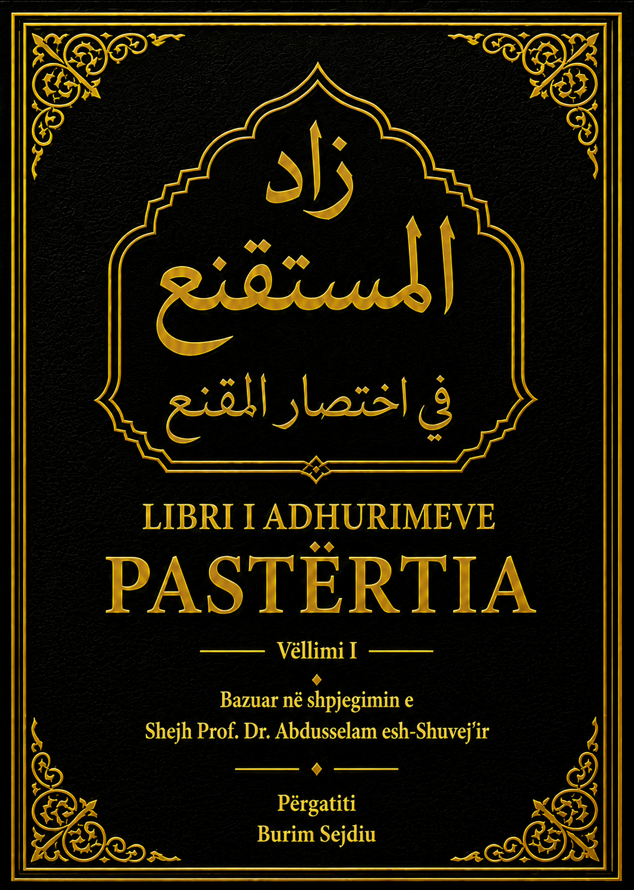

Vëllimi I
Pastërtia
Zad el-Mustakni‘ në përmbledhjen e El-Mukni‘
زاد المستقنع في اختصار المقنع
Botim në gjuhën shqipe. Abdesi, gusli, tejemumi, largimi i papastërtisë dhe menstruacionet.
Temat në libër
Pyetje nga vëllimi
Si citohet ky vëllim
Sherafuddin Ebu en-Nexha Musa ibn Ahmed ibn Musa el-Haxhavi el-Makdisi es-Salihi. Zad el-Mustakni‘ në përmbledhjen e El-Mukni‘. Vëllimi I, Pastërtia. Me shpjegimin e shejh Abdusselam ibn Muhamed esh-Shuaj‘ir. Përgatiti Burim Sejdiu.
Për të cituar një paragraf të veçantë, hape në libër dhe përdor butonin «Cito».